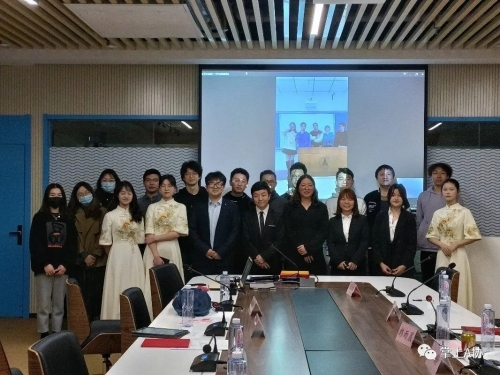

分团委组织部

为学习两会精神，加强青年的政治理论学习，使我院青年树立正确的政治方向，增强明辨是非的能力，巩固我院学生骨干队伍建设，持久地开展培养青年马克思主义者的工作。 本学年我们学院举办了第十期“青年马克思主义者分层次一体化培训班”，而我作为组织部主要负责人负责活动的具体策划和实施
图片所示的是我第一次负责这么大型活动的现场，和想象中的确实很不一样，无论是前期的策划、现场突发情况的处理还是后期的复盘工作， 我从中学到了很多很多。
A协分析团

金牌分析师大赛是我校A股分析协会一年一度举办的大型投资分析赛事，主要针对不同公司的基本面和技术面进行独立分析， 由评委打分，获胜者将获得优渥福利。
作为A股分析协会分析团的成员，我也切实地参与到了其中，通过这场比赛我也真真正正地学习到了那些优秀的同学是如何进行 一个公司的具体分析的，使我受益匪浅。